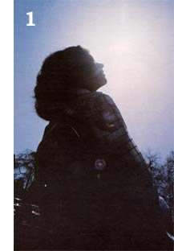

[1] Sunning is one of the best relaxation techniques for your eyes. Don't, however, open your eyes and look directly into the sun. [2] Palming allows the eye muscles to rest, and should be done frequently throughout the day. For best results, prop your elbows on a cushioned surface or pillow. [3] A pencil is a handy device to use when practicing central fixation, shifting, or as a substitute for a narrow-edged ruler during the squinting exercise. (4 and 51 Long swings (which help increase the mobility of the eyes) incorporate the entire body in movement. Begin by facing the wall . . . and end each arc facing the opposite wall.